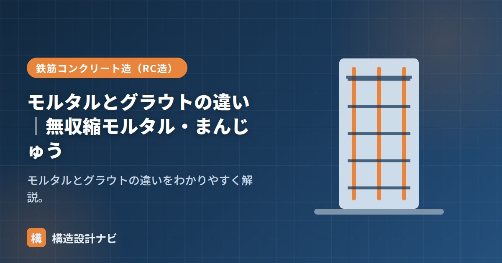

モルタルとグラウトの違い｜無収縮モルタル・まんじゅう

グラウトとは、隙間や空隙に流し込んで充填する、流動性の高い材料のことです。モルタルと似ていますが、流動性や収縮の性質が異なり、鉄骨の柱脚などで重要な役割を果たします。充填が不十分だと柱脚のがたつきや応力集中の原因になるため、材料の性質と正しい施工手順を理解しておくことが大切です。
- グラウトは流動性が高く、すき間なく充填できる材料。多くは無収縮タイプ。
- 無収縮モルタル（グラウト）は膨張材の働きで硬化収縮を打ち消している。
- 鉄骨柱脚では「まんじゅう」でレベルを決めたあと、グラウトで本充填する。
グラウトとは
グラウトは、機械や部材のすき間に充填するための流し込み材です。狭い隙間にも行き渡るよう流動性が高く、硬化後にすき間が空かないよう収縮しにくい（無収縮）ように作られた製品が一般的です。
モルタルとの違い
| モルタル | グラウト | |
|---|---|---|
| 役割 | 仕上げ・下地・積み | すき間への充填 |
| 流動性 | こて塗りできる硬さ | 高く、流し込める |
| 収縮 | 乾燥収縮しやすい | 無収縮（わずかに膨張）製品が多い |
無収縮モルタル（無収縮グラウト）
無収縮モルタルは、膨張材などで硬化収縮を打ち消し、すき間なく充填できるようにした材料です。セメントが硬化する過程では通常わずかに乾燥収縮が生じ、そのままではすき間が空いてしまいます。無収縮タイプは膨張材の作用によってこの収縮分を相殺し、場合によってはわずかに膨張することで、充填部にすき間なく力を伝えられるようにしています。流動性の高いものは無収縮グラウトとも呼ばれ、次のような場所に使われます。
- 鉄骨の露出柱脚：ベースプレートと基礎コンクリートのすき間。
- 機械・設備の据付け（ベースの充填）。
- アンカーボルトの固定、PC部材の接合部。
「まんじゅう」との関係
鉄骨建方では、柱を据える前に基礎の上へ硬練りモルタルの塊（通称「まんじゅう」）を盛り、その高さでベースプレートのレベル（高さ）を調整します。柱をまんじゅうの上に据えて建入れを決めたあと、ベースプレート下の残りのすき間に無収縮グラウトを充填して一体化します。まんじゅう＝据付け・レベル出し用の仮支えモルタル、グラウト＝本充填材、という役割分担です。
施工の流れとしては、（1）まんじゅうを盛って柱を仮据えし建入れ・レベルを調整、（2）本締め・検査、（3）ベースプレート下の周囲を型枠で囲み、無収縮グラウトを流し込んで充填、（4）養生して硬化を待つ、という順序が基本です。グラウトは流動性が高いとはいえ、気泡が入らないよう一方向からゆっくり流し込むことが重要です。
よくある不具合と注意点
- 充填不足・空隙：流し込み速度が速すぎたり型枠内に空気が逃げる経路がないと、ベースプレート下に空隙が残ることがある。
- ブリーディング：材料の水分が分離して表面に浮くと、強度低下や仕上がり不良の原因になる。
- 養生不足：硬化前に振動や荷重を与えると、ひび割れや強度不足につながる。
鉄骨建方の柱脚まわりを見に行くと、まんじゅうの高さ調整に気を取られてグラウトの流し込み速度が甘くなっている現場がある。空隙が残ると支圧が偏るため、打診検査で異音がないか確認するまで気を抜かないようにしている。
モルタル全般は「モルタルとコンクリート」、柱脚は「鋼構造接合部設計指針」、3者比較は「セメント・モルタル・コンクリート」をどうぞ。
モルタルとグラウトの違い（図解）
柱脚での使われ方
グラウトがもっとも重要な役割を果たすのが、鉄骨の露出柱脚です。
| 手順 | 内容 |
|---|---|
| ① まんじゅう（レベル調整用モルタル） | ベースプレートの高さを決めるため、基礎上に小さなモルタルの山を作る |
| ② 柱の建方 | まんじゅうの上にベースプレートを載せ、レベル・倒れを調整してアンカーボルトで固定 |
| ③ 型枠の設置 | ベースプレート周囲に型枠を設け、グラウトを流し込む空間をつくる |
| ④ グラウト充填 | 無収縮グラウトを一方向から流し込み、空気を追い出しながら隙間なく充填する |
| ⑤ 養生 | 所定の強度が出るまで養生。この間は柱に大きな力を加えない |
柱脚のグラウトは、柱の軸力を基礎に伝えるという構造上きわめて重要な役割を持ちます。もしグラウトが収縮してベースプレートとの間に隙間ができると、荷重が一部にしか伝わらず応力集中が生じたり、地震時に柱脚ががたついたりします。そのため、膨張材を含み硬化時に収縮しない無収縮グラウトを使い、確実に充填することが求められます。充填後に叩いて音を確認するなど、充填状況の検査も行われます。
よくある質問
Q1. まんじゅうとは何ですか？
鉄骨柱の建方前に、ベースプレートの高さを決めるために基礎上に作る、小さなモルタルの山のことです。形が饅頭に似ていることからこう呼ばれます。天端を正確なレベルに仕上げ、この上にベースプレートを載せて柱の高さを決めます。まんじゅうはあくまでレベル調整用で、最終的な荷重伝達は周囲に充填するグラウトが担います。
Q2. グラウトの充填が不十分だとどうなりますか？
柱の軸力が確実に基礎へ伝わらず、応力集中による基礎コンクリートの損傷や、地震時の柱脚のがたつきにつながります。また、隙間に水が浸入するとベースプレートやアンカーボルトが腐食します。充填後は打診（叩いて音を確認）や、必要に応じて内視鏡による確認を行い、充填状況を検査します。
Q3. 無収縮モルタルとグラウトは同じですか？
重なる部分が多く、実務ではほぼ同義で使われます。厳密には、グラウトは「隙間に流し込んで充填する材料」という用途を表す言葉、無収縮モルタルは「収縮しないよう調整されたモルタル」という性質を表す言葉です。柱脚に使う材料は、流動性が高く（グラウト性）かつ収縮しない（無収縮）ものであり、両方の性質を備えた製品が使われます。
まとめ
- グラウトは流動性が高くすき間に充填する材料。多くは無収縮。
- 無収縮は膨張材による収縮の打ち消しで、すき間なく充填できる仕組み。
- 無収縮モルタル（グラウト）は鉄骨の露出柱脚・機械据付などの充填に使う。
- 「まんじゅう」はベースプレートのレベル出し用の仮支えモルタルで、本充填はグラウト。